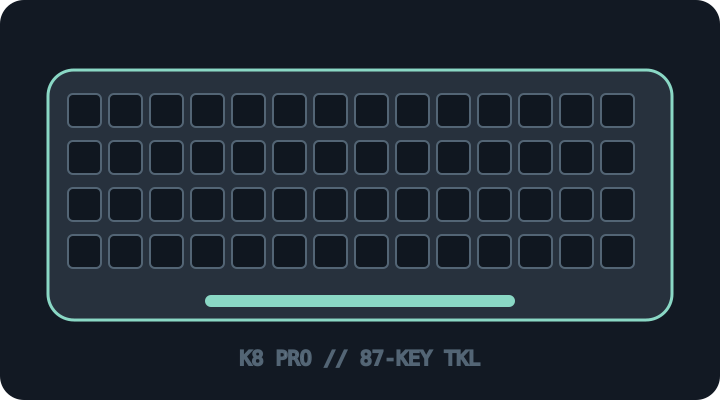

[ KEYBOARDS AND INTEGRATED POINTING DEVICES // IDENTIFIED SKU ]
Keychron K8 Pro (K8P-H3)
87-key tenkeyless QMK/VIA mechanical keyboard with Bluetooth and USB-C.

MODEL IDENTIFICATION: K8P-H3 — prebuilt ANSI RGB hot-swap variant; verify region and full underside label. This archive entry identifies a real manufacturer product/variant; physical labels and dated manuals supersede generalized family descriptions.
Model specifications
| Catalog subcategory | Keyboards and integrated pointing devices |
|---|---|
| Exact model / SKU | K8P-H3 — prebuilt ANSI RGB hot-swap variant; verify region and full underside label. |
| Layout and key arrangement | ANSI tenkeyless (87-key) layout; function row, arrows and navigation block retained. This entry identifies the H3 prebuilt switch variant, not every K8 Pro regional option. |
| Switch type / mechanism | Gateron G Pro Brown tactile mechanical switches in the H3 build; hot-swap sockets are specified for supported MX-style switches. Verify that the physical unit is the hot-swap build before changing switches. |
| Interface and protocol | Bluetooth 5.1 for up to three paired hosts or USB-C wired data; modes are selected on the keyboard. Wireless receiver is not used. |
| Key rollover / anti-ghosting | Keychron specifies N-key rollover for the K8 Pro; validate behavior with the applicable firmware and host, particularly over Bluetooth. |
| External dimensions | ANSI case approximately 355 × 123 × 35.8 mm; Keychron publishes separate size/weight figures for other layouts and case builds. Confirm the exact locale and aluminum-frame option. |
| OS and host compatibility | Windows, macOS and Linux are supported; Bluetooth can pair with other compatible hosts. Physical OS switch and keycaps affect modifier mapping; VIA/QMK configuration requires supported firmware and a compatible host/browser. |
| Revision / regional caveat | K8 Pro is distinct from K8 and K8 Max. K8P-H1/H3 switch variants, ISO/JIS layouts, frame, hot-swap status, RGB/white backlight, firmware and regional legends differ; retain exact SKU and firmware before servicing. |
Preservation and service notes
Photograph the bottom label and switch position, record the installed firmware/keymap and Bluetooth pairing state, and retain the original caps/switches. Disconnect USB and power down before switch service.
Record the as-found SKU/revision, host OS and version, connection method, firmware, keymap and test method. Do not infer rollover or compatibility from the connector alone; clearly separate unpublished manufacturer specifications from tested observations.
Manufacturer sources
- Keychron K8 Pro product pageModel options, connections and manufacturer-published specifications.
- Keychron K8 Pro User GuideModel-specific manufacturer manual for setup, operation and variant identification.
Manufacturer pages can be revised or retired. Retain the applicable dated manual/specification with the physical equipment record.